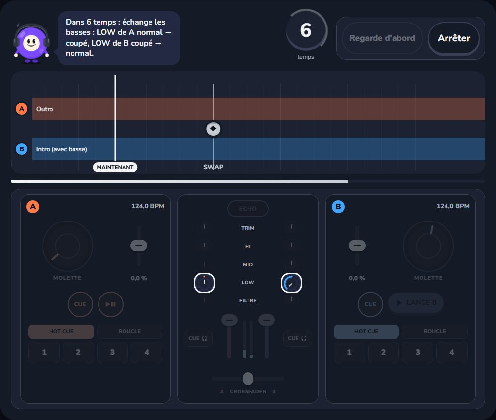
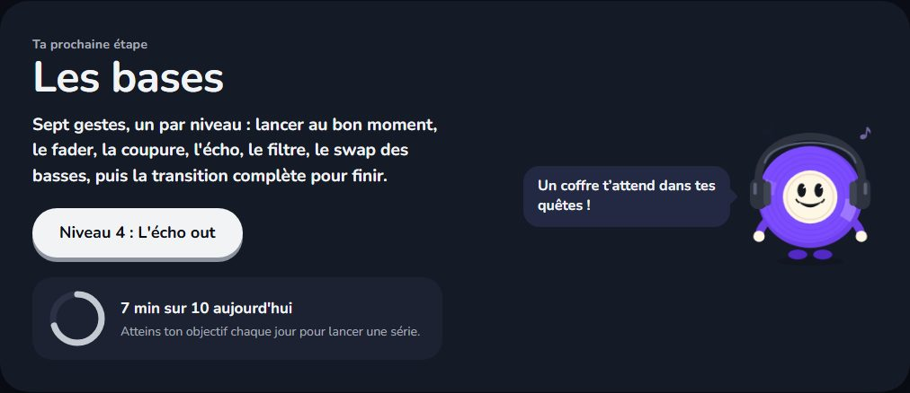
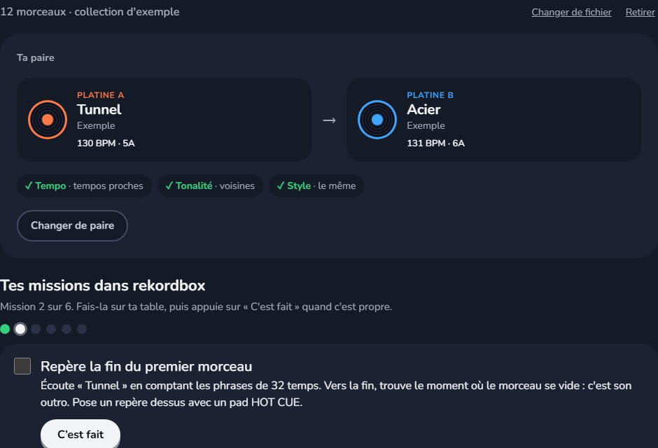

Tu as une table et tu n'y connais rien ? En deux semaines, tu fais tes premières vraies transitions propres, avec ta musique.
Gratuit pendant la phase de test · sans compte · tout reste sur ton ordinateur
Branche ta table en USB. Les gestes arrivent sur une piste qui défile, comme dans un jeu de rythme : lancer B, monter le fader, échanger les basses. Tu les fais sur ta vraie table, et le site te note au temps près.
Raté ? Il te dit pourquoi, par exemple « B est parti 8 temps trop tôt », et te montre ton geste à côté du geste idéal.

Un objectif de 5, 10 ou 15 minutes par jour, une série de jours à tenir, un défi du jour, des mini-sets de trois transitions d'affilée et un quiz pour retenir les mots du DJ.

Importe ta collection rekordbox : le site te propose des paires de tes morceaux qui s'enchaînent bien, puis des missions à faire dans rekordbox, avec ta musique.

Un petit tour pour apprendre à compter la musique, puis sept gestes, un par niveau, chaque bouton présenté juste avant de s'en servir : le bon moment, le fader, la coupure, l'écho, le filtre, le swap des basses, puis la transition complète pour finir.
Un test de 3 épreuves pour voir où tu en es, puis on travaille tes transitions : à l'oreille, avec deux fois plus de précision, puis sur de vraies structures de morceaux.
Oui, pendant la phase de test.
Non, tu peux tout faire sans compte : ta progression reste alors dans ton navigateur, sur cet ordinateur, et elle n'est envoyée nulle part. Si tu en crées un (avec une adresse e-mail ou avec Google), tes étoiles, tes XP et tes badges te suivent d'un appareil à l'autre, et tu ne perds rien en changeant d'ordinateur.
Les niveaux se jouent sur de vrais morceaux de house libres de droits (Play House, domaine public). Tu peux aussi choisir des morceaux fabriqués par le site, en house, techno ou afro. Ensuite, « Passer au vrai » te fait travailler avec ta propre musique dans rekordbox.
Non. DJingood t'apprend les gestes ; rekordbox reste le logiciel avec lequel tu mixes pour de vrai.
Le site reconnaît tout seul la Pioneer DDJ-FLX4, et une douzaine d'autres tables de débutant (Pioneer DDJ-400, DDJ-SB3 et DDJ-200, Hercules Inpulse 200, 300 et 500 et Starlight, Numark Mixtrack Platinum FX et Pro FX, Party Mix et DJ2GO2 Touch, Roland DJ-505, Reloop Mixage). Si tu branches une table qu'il ne connaît pas encore, il te propose de la régler pas à pas : il te montre chaque commande, tu la bouges, il la reconnaît. Une commande que ta table n'a pas se fait à la souris. Les réglages de ces tables viennent de leur documentation : dis-nous si quelque chose ne marche pas avec la tienne.
Pas pour l'instant : le site est prévu pour un ordinateur avec Chrome ou Edge, la table branchée en USB.